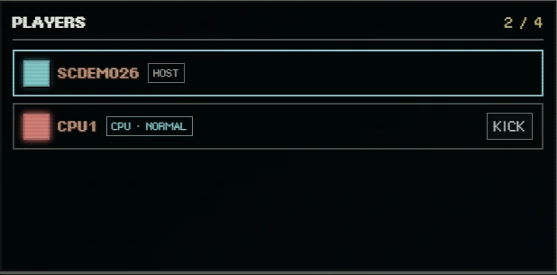
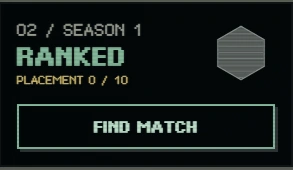
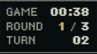
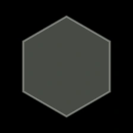
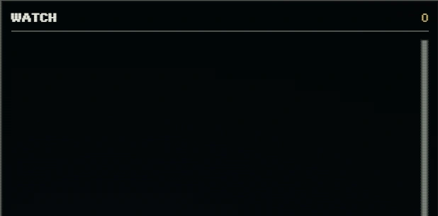
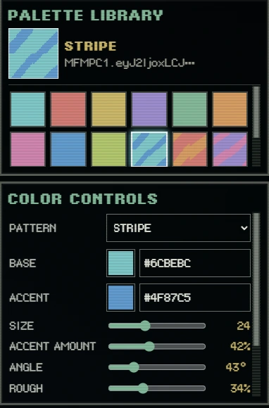
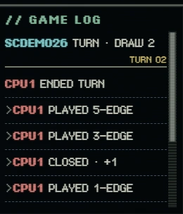

Modes & competition
Create a room to play with friends, practice against AI, or join Ranked for a single-round rated match.

Ways to play
Custom rooms
Create a room and share its code or invitation link. Up to four players can play together, with additional seats for spectators.
AI battles
Practice white-edge connections, closing regions and assessing risk against computer opponents. The game offers different AI options.
Ranked matches
Use matchmaking to compete for seasonal standings. RTG changes depend on results and your opponent's rating.
Knockout tournaments
Follow a tournament bracket and advance round by round. This is a separate format from Ranked rating-based matchmaking.


One round or three?
| Mode | Rounds | Result |
|---|---|---|
| Ranked | 1 | The round's result decides the match. |
| Regular / AI | 3 | Settled using the complete match's rounds and accumulated results. |
| Knockout | 3 | Advancement has additional tiebreaking rules. |
A single-round match uses the same placement and closure-scoring rules. The difference is when the match result is decided.

Ranked & RTG
Ranked uses an Elo rating system. A new account starts at 1200 RTG. The first 10 matches are a placement period, during which rating changes may be larger. Ratings continue to adjust afterward based on both players' ratings and match results.
Bronze
< 1100 RTGAlso used provisionally during placementSilver
1100+ RTGPlacement completeGold
1200+ RTGPlacement completePlatinum
1300+ RTGPlacement completeDiamond
1450+ RTGPlacement completeMaster
1600+ RTGAt least 30 completed matches
A rating status for the first 10 matches, shown separately from the six official tiers.
More ways to explore
- Tutorial: Learn the board and match flow with guided instructions.
- Spectating: Watch a room's ongoing match without taking a player seat.
- Replays: Watch and review saved matches.
- Color Lab: Customize your tile colors, patterns and visual styles.
- Player history & badges: View season and event records in player profiles.
Availability, limits and supported features may change with game updates.


